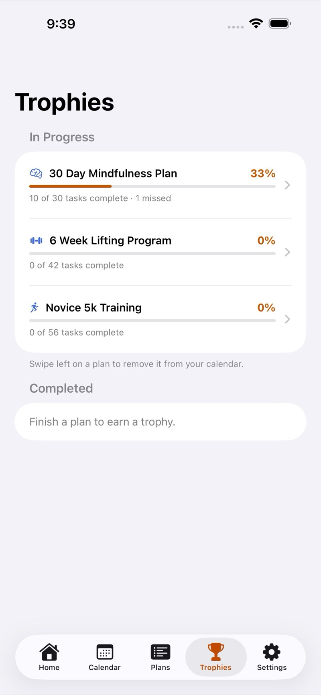
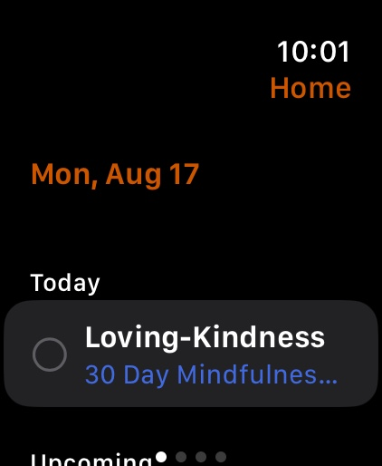
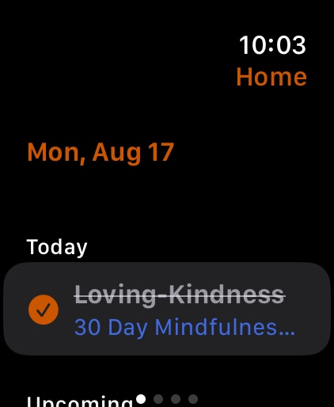
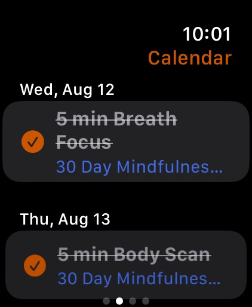
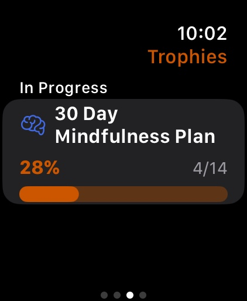

1
Pick a plan
Open the Plans tab. Bundled plans cover lifting, running, and mindfulness. Tap one to see the days, then tap Apply Plan to put it on your calendar.


Guide
Apply a plan, check off the day, and keep the same schedule on iPhone, iPad, Watch, and widgets.
1
Open the Plans tab. Bundled plans cover lifting, running, and mindfulness. Tap one to see the days, then tap Apply Plan to put it on your calendar.
2
Home shows Today, Upcoming, Recent, and Progress. Tap the arrows in the corner to reorder those cards. Tap a workout to open it.


3
On a workout, add notes if you want, then tap Mark as Complete or Mark as Missed. Completed days get a check. Missed days stay in Recent and plan history.

4
Calendar is the full schedule. Use Today to jump back. Check off a day from the list, or open it for notes.

5
Trophies tracks each applied plan. Open a plan to see history, filter remaining vs completed, and read your notes.


6
Tap + on Plans to build a routine: name, icon, daily or weekly repeat, and each day’s details. You can also import a CSV from the plan editor.


7
Touch and hold the Home Screen, tap Edit, then Add Widget, and choose Check Yourself.
Upcoming shows what’s next and can mark a workout complete. Progress shows how far you are through a plan and opens Trophies.
8
On Apple Watch, swipe between Home, Calendar, Trophies, and Settings. Tap the circle next to a workout to mark it complete. Changes sync with iPhone and iPad over iCloud.




9
Turn on iCloud for Check Yourself in Settings. Plans and progress then sync across iPhone, iPad, and Apple Watch.